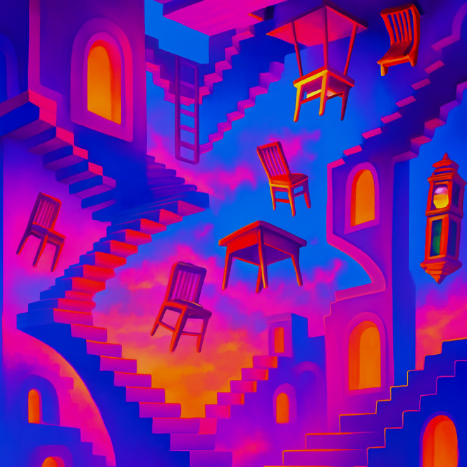

Mouse stepped through the shimmer—and into madness.
The world twisted sideways. Gravity pulled in strange directions. Stairs ran upside-down across ceilings. Tables floated. Mirrors bent their reflections until Mouse and Bat looked like shadows with glowing eyes.
“I don't like this," Bat whispered, flapping to stay upright.
Mouse gritted his teeth. The house was familiar... and yet wrong. Paintings melted slowly down the walls. Doors opened to empty space. Sound came in backwards whispers that made his fur stand on end.
In the center of the room stood a giant, ancient grandfather clock. Its hands spun wildly in all directions, glowing faintly with silver light. Beneath it, a small hidden door flickered in and out of existence — a way out... if they could catch it before the clock struck backwards midnight.
Mouse knew they had only one chance to escape the Upside World before they were trapped forever.